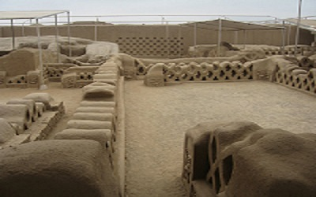
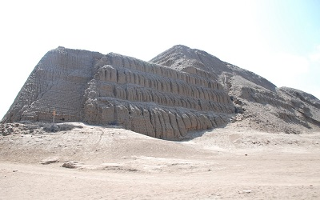
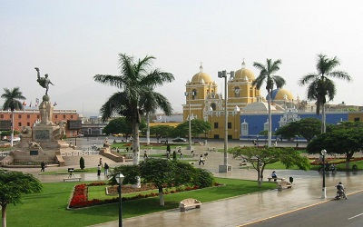
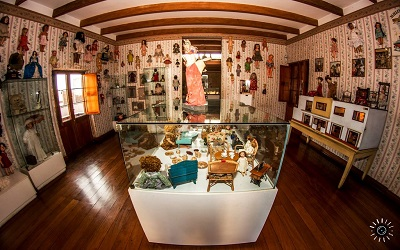

| LUGARES TURISTICOS | ||
|---|---|---|
| Lugar | Imagen | Contactos |
| CHAN CHAN
La visita a la ciudadela de chan chan es obligatoria en toda visita a Trujillo Toma cerca de una hora la visita guiada. Recomiendo contratar guia, caso contrario no entenderas el alcance de lo que estas visitando, los guias estan disponibles al ingreso de la ciudadela y el costo del ingreso es tan bajo que compensa con el guia. Vayan protegidos para el sol siempre, en cualquier epoca del ano y tomen en cuenta que cierra a las 4pm. |
 |
|
| Huaca del Sol y la Luna
En trujillo en el tiempo de los huaqueros, se decía que cada promontorio o cerro aislado era una huaca, y no se estaba lejos de la realidad, al sur de Trujillo en Moche se encuentran estas dos huacas, que al creer inicialmente que eran ruinas incaicas recibieron el nombre de Sol y Luna, pero posteriormente se confirmó que son de la Cultura Moche. Son dos piramides totalmente construidas en abobe, bloque artesanal de forma similar a un ladrillo pero mas grande, moldeado a base de barro, paja y secado al sol. Si se tiene poco tiempo, lo mas importante a visitar en estas huacas son sus murales multicolores. En el entorno de este complejo arqueológico se ha formado todo un oferta comercial variada promovida por los lugareños, los llamados mocheros habitantes del valle de Moche, que se dicen descendientes de esta cultura y que expresan su ascendencia mediante artesanías, repujados en cuero, talla en madera y piedra así como canastas tejidas con fibras vegetales |
 | PAgina Web
chuacasdemoche Telefonos: 044788888-- 94785668 |
| La Plaza de Armas de Trujillo
Finalmente después de tiempo esta hermosa plaza luce totalmente renovada, su piso de mármol fue reemplazado por cemento bruñado, un cambio que no esta acorde con la majestuosidad de su monumento central. Sus hermosas farolas forjadas en hierro fundido de estilo Colonial, alumbran como antaño y de noche le dan un ambiente relajado. En el centro de la plaza se ubica el Monumento de La Libertad, monumento de 3 cuerpos, con varias placa conmemorativas Los domingos como toda plaza Mayor, es escenario de ceremonias cívicas patrióticas, con izamiento de la bandera, marchas militares y escolares, es también el centro de cualquier celebración o evento local o regional. Los fines de semana es escenario de actividades culturales. |
 |
|
| La casa del Juguete
Muñecas, Maquetas trenes, soldaditos de plomo.A solo dos cuadras de la Plaza Mayor sobre la calle Independencia, se ubica este pequeño mundo de juguetes emprendimiento privado del artista plástico Gerardo Chavez, una colección de caballitos de madera, muñecas de variada, silbatos, marionetas, soldaditos de plomo, trenes eléctricos, sonajeros, y miles de juguetes desde la época prehispánica hasta lo 50s. El juguetes más antiguos es un silbato de la cultura Virú, con mas de 2,300 años de antigüedad . Nos gustó tanto en nuestra anterior visita, que esta vez trajimos a nuestro nieto para que lo visite. |
 |
|